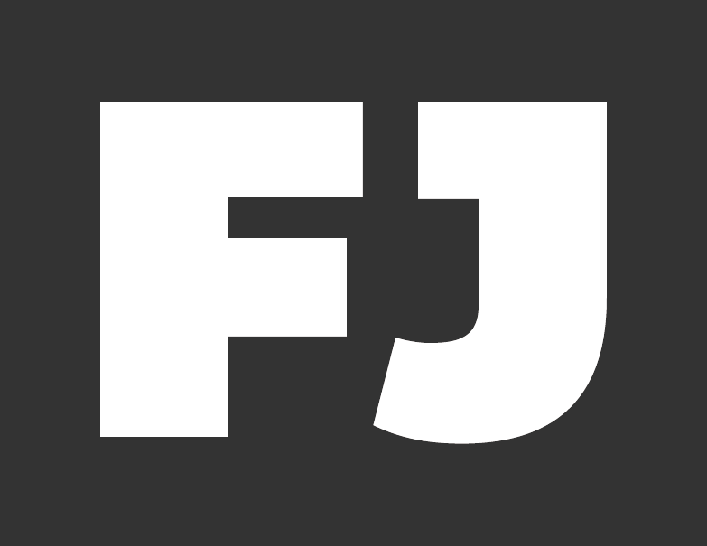

Data Journalism
The past, present and future.
Dave Stanton /
@gotoplanb
What is journalism?
Report, edit and distribute information
Objectivity vs advocacy
Parallels with OSS
Transparency and collective action
Shared challenges
Privacy and security
Onion Browser for iOS
Mike Tigas
of ProPublica
What is data journalism?
Interviewing data instead of humans
Computer Assisted Reporting
Spreadsheets. Lots of spreadsheets.
Pragmatists not computer scientists.
Professional organizations
Investigative Reporters & Editors
Online News Association
We share tools
Python
Ellington CMS → Django
JavaScript
DocumentCloud → Backbone.js and Underscore.js
Recruiting devs
for journalism
Northwestern University in 2007
Knight-Mozilla Fellows
AP-Google Scholarships
Losing them to tech
Twitter, Facebook et al.
J-schools

For Journalism
Practical news-application projects
Adaptive scope: semester, weekend or ad-hoc
Model
Kickstarter
GitHub
Hosted facilitation
How we all win
Mid-career retraining
Converting technologists to journalism
Assisting colleges and high schools
Partners
Digital First Media
Montclair State University
NBC News
Online News Association
What next?
-30-
BY Dave Stanton / @gotoplanb
{kind=link}
{kind=link}